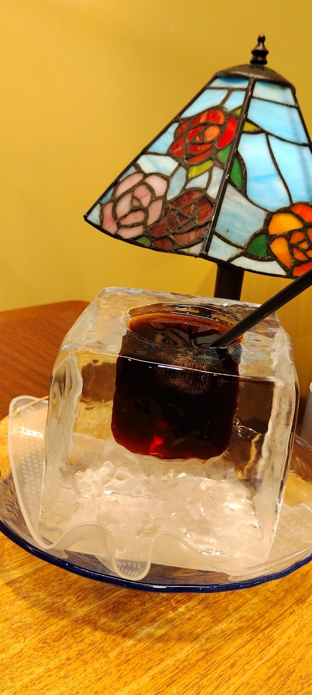
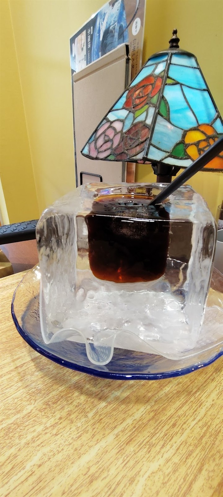
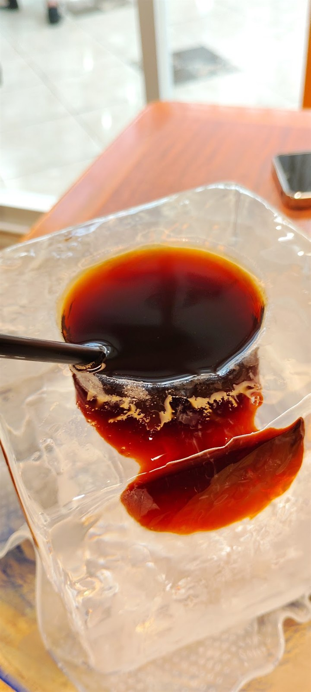
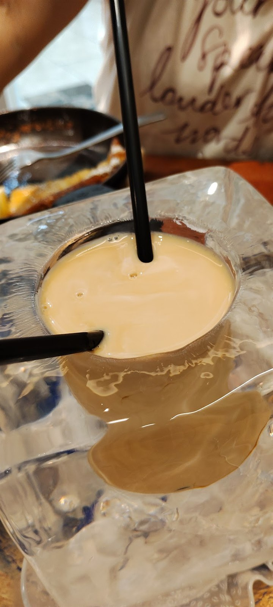
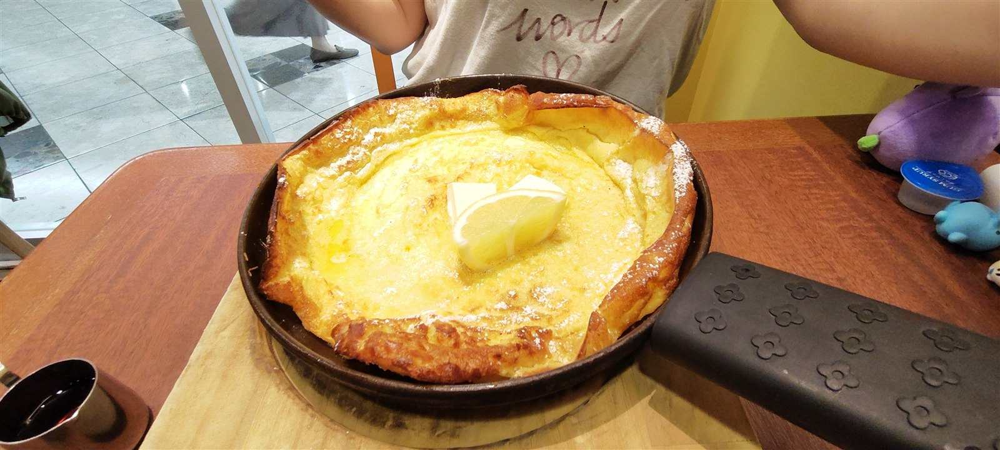
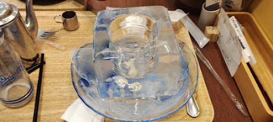

こんにちは、ろぶーです。2026年8月11日、「山のカフェ＆レストラン 上高地あずさ珈琲 阪急三番街店」で、夏季限定の氷珈琲をいただきました。
大きな氷をくり抜いた器に冷たい珈琲を注ぐ、見た目から涼しくなる一杯です。最初はブラックで味わい、最後は追加で注文した信州ミルクを加えて、珈琲牛乳のように味変して楽しみました。
2026年の販売は8月30日で終了しています。この記事は、訪問時の体験を写真で振り返った記録です。
本物の氷がそのまま器に
運ばれてきたのは、透明な氷の塊をくり抜いた器。想像していたアイスコーヒーとはまったく違う姿に、まず驚きました。


飲んでいる間も器そのものが冷たさを保ってくれます。氷が少しずつ形を変えていく様子まで、このメニューならではの楽しみでした。

ブラックから信州ミルクへ
まずはブラックで楽しみ、途中で信州ミルクを追加しました。ミルクを注ぐと色合いがやさしく変わり、最後は珈琲牛乳のような味わいに。一杯で二通りの飲み方を楽しめるのがうれしいところです。

一緒にレモンのパンケーキ
この日は、焼きたてのパンケーキも一緒に注文。大きく広がった生地にレモンとバターが添えられ、氷珈琲と並べるとテーブルが一気に華やかになりました。

2026年の価格と販売期間
- 氷珈琲
- 1,480円（税込）
- 追加信州ミルク
- 330円（税込）
- 販売期間
- 2026年6月10日〜8月30日
- 販売店舗
- 上高地あずさ珈琲 全13店舗
上記は2026年の公式発表に基づく情報です。夏季限定メニューのため、次回の販売時期、価格、提供店舗は変更される可能性があります。最新情報は公式サイトでご確認ください。
阪急三番街店の店舗情報
- 店名
- 山のカフェ＆レストラン 上高地あずさ珈琲 阪急三番街店
- 住所
- 大阪府大阪市北区芝田1丁目1-3 阪急三番街 B2F
- アクセス
- 阪急大阪梅田駅直結／地下鉄御堂筋線梅田駅 北改札口から徒歩約1分
- 営業時間
- 11:00〜22:00
- 定休日
- 阪急三番街の休業日に準ずる
- 電話
- 06-6292-7140
巨大な氷の器まで楽しむ、夏の一杯
巨大な氷の器は写真で見ても印象的ですが、実際に目の前へ運ばれてくると迫力が違います。ブラックから信州ミルクへ味を変えながら、最後まで冷たい一杯を楽しめた夏の思い出になりました。

公式情報
販売情報と店舗情報は2026年9月14日に公式サイト・公式発表で確認しました。写真は2026年8月11日の訪問時に本人が撮影したものです。